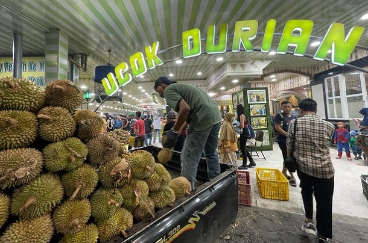

Arsik Ikan Mas
Ikan mas bumbu kuning khas Batak yang gurih dan lezat. Dimasak dengan bumbu khas seperti andaliman, memberikan rasa yang unik dan autentik.
Soto Medan

Soto Medan dengan kuah santan kental, diisi dengan sohun, perkedel kentang, dan berbagai bahan segar lainnya. Memiliki rasa gurih yang khas.
Lemang
Lemang, makanan tradisional dari beras ketan yang dimasak dalam bambu dengan santan. Cocok dinikmati sebagai pendamping berbagai hidangan.
Ucok Durian
Durian Medan yang terkenal, memiliki daging tebal dan rasa manis yang khas. Cocok untuk pecinta durian sejati.
Bika Ambon
Kue khas Medan dengan tekstur kenyal dan rasa manis yang unik. Terbuat dari tepung tapioka, gula, dan santan, memberikan rasa yang lezat.
Mie Gomak
Mie Gomak adalah mie khas Sumatera Utara yang berbumbu pedas dengan cita rasa yang kaya. Biasanya disajikan dengan irisan daging dan sayuran segar.
Daun Ubi Tumbuk

Daun Ubi Tumbuk adalah hidangan yang terbuat dari daun singkong yang ditumbuk dengan bumbu khas, memberikan rasa yang gurih dan lezat.
Ikan Naniura

Ikan Naniura adalah ikan mentah yang diolah dengan bumbu khas Batak. Hidangan ini dikenal dengan rasa yang segar dan pedas.